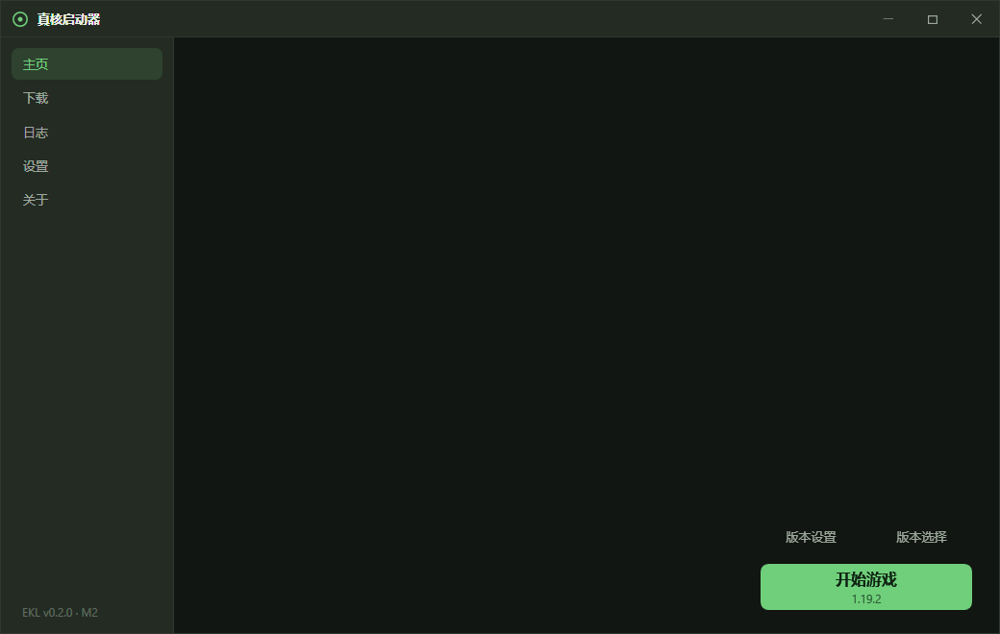
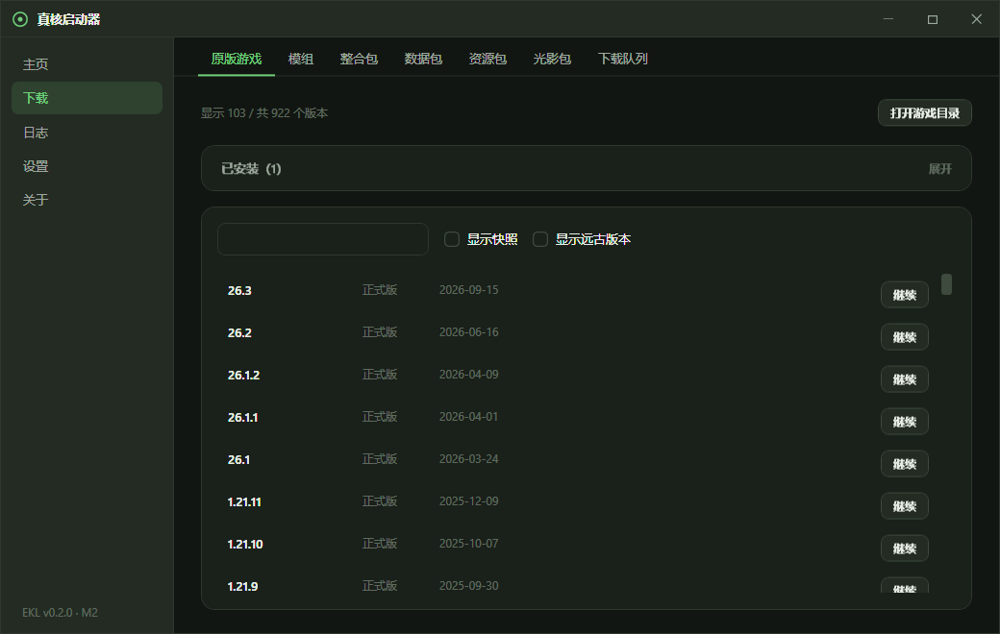

真核启动器 · Eukary Launcher
用 C# 写的开源 Minecraft Java 版第三方启动器。
核心轻量稳定，插件如同细胞器自由挂载。


功能
游戏安装与启动
- 支持安装 Mojang 官方全部版本：正式版、快照、远古 alpha / beta 都能下载游玩
- Fabric / Forge / NeoForge / OptiFine 四种模组加载器，能共存的可以组合安装
- 内置 Modrinth 模组搜索与安装，安装前自动校验兼容性
- Java 全自动：缺哪个版本就自动下载哪个
- 输入用户名即可离线游玩单机
下载管理
- 多任务并发下载，支持暂停、继续、取消和失败重试
- 默认国内镜像（BMCLAPI），失败自动回退官方源
- 支持断点续传，下载完成、出错都有通知提醒
版本管理
- 多游戏文件夹，文件夹可自定义显示名
- 版本隔离：每个版本独立的存档、资源包与配置目录
- 版本选择页集中管理已装版本：切换、删除、文件夹改名
界面
- 主页一键开始游戏，当前版本与加载器直接显示在按钮上
- 实时滚动显示游戏日志
- 全站统一的流畅动效与信息流布局
系统要求
| 项目 | 要求 |
|---|---|
| 操作系统 | Windows 10 1607 及以上，64 位 |
| 运行时 | 无需安装 .NET，安装包自包含 |
| Java | 无需手动安装，启动器按需自动下载 |
里程碑
| 里程碑 | 内容 | 状态 |
|---|---|---|
| M1 | 最小可用：装原版、启动、看日志 | ✅ v0.1.0 |
| M2 | 微软正版登录 | 🚧 进行中 |
| M3 | 下载中心：原版 / 加载器 / 模组 / 队列 | 🟡 主体功能已可用 |
| M4 | 整合包导入与安装 | ⬜ |
| M5 | Forge / NeoForge / OptiFine 安装、Java 自动下载 | ✅ |
| M6 | 主题 | ⬜ |
| M7 | 发布：自动更新、崩溃报告 | ⬜ |
| M8 | 插件系统 | ⬜ |